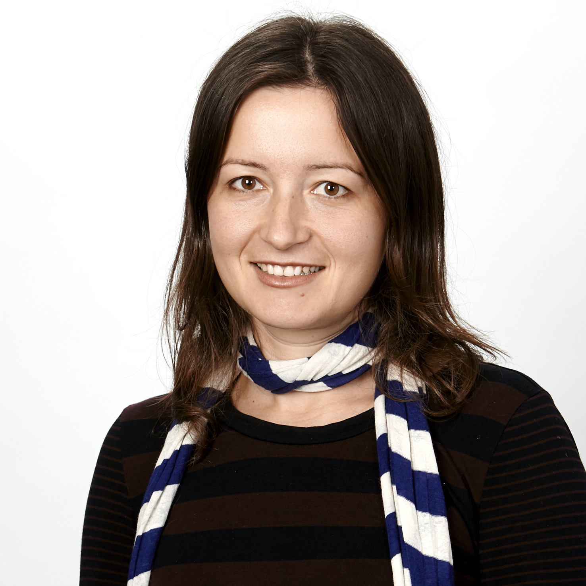
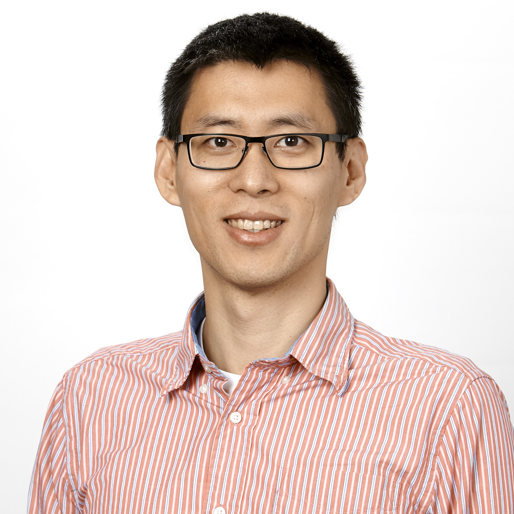

Software Engineering Staff

Aldeida Aleti
Office phone: x34688
Units
None

Yuan-Fang Li
Office phone: x59688
Units
- FIT3013 Formal Specification for Software Engineering
- FIT4002 Software Engineering Studio Project
Robyn McNamara
Office phone: x59748
Units
- FIT3042 System Tools and Programming
- FIT4002 Software Engineering Studio Project
- FIT2043 Technical Documentation
- FIT3077 Software Engineering: Architecture and Design
- FIT3140 Advanced Programming
Robert Merkel
Office phone: x55056
Units
- FIT3140 Advanced Programming
- FIT4004 System Validation and Verification, Quality and Standards
- FIT5136 Software Engineering
- FIT4002 Software Engineering Studio Project
David Squire
Office phone: x59013
Units
- FIT2024 Software Engineering Practice
- FIT3077 Software Engineering: Architecture and Design
- FIT2001 Systems Development
- FIT4002 Software Engineering Studio Project